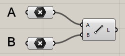
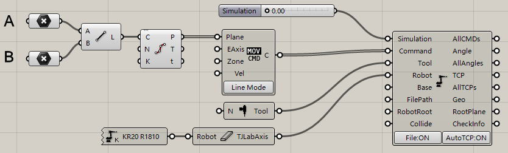
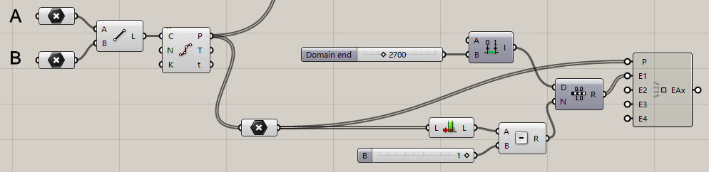
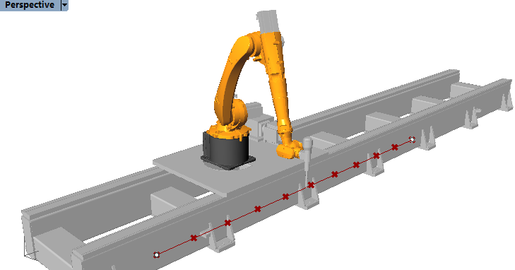

4. Use external axis¶
Sometimes we need to print an object on a large scale, we need the help of external axis.
4.1. Create start pose¶
Create point A and point B in rhino.
A:[0,0,0]
B:[0,3000,0]
Use Line component to generate a line.
4.2. Add components¶
Add Metalweldtool toolhead, KR20r1810 robot, and TJLabAxis external axis. Connect them as the following figure shows:
But when dragging the simulate slider, you will find the robot cannot move along the external axis. Therefore it cannot run the whole path. That is why we have to add a external axis value.
4.3. Add external axis value¶
Connect the components as the figure below:
These components are used to get the same count of external axis value as the count of the points in the path. Now, the external axis value is 0~2700 (with this value, robot can run smoothly).

Now,when you drag the simulation slider, you can find the robot print well.
